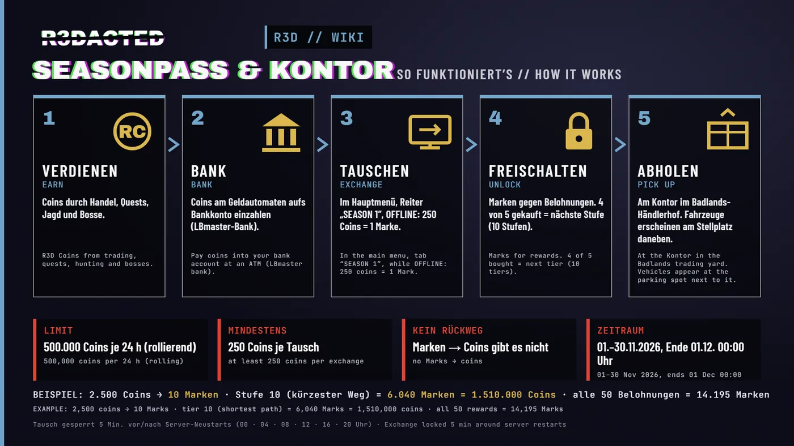
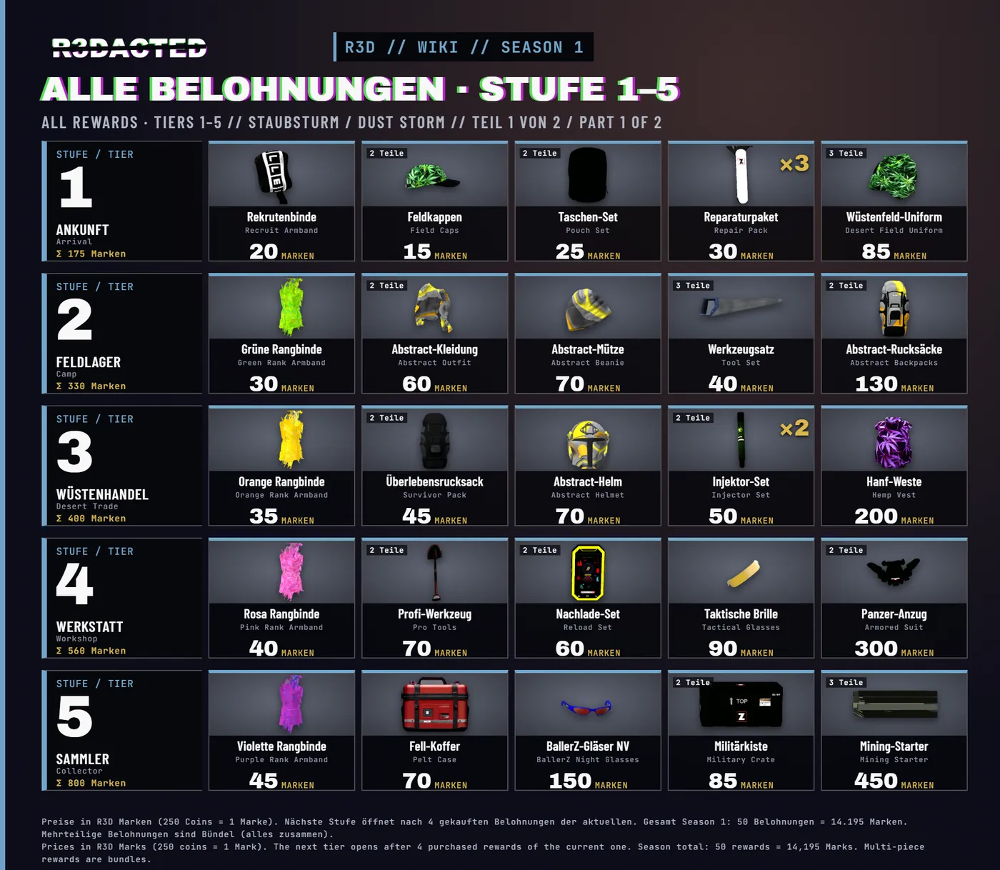
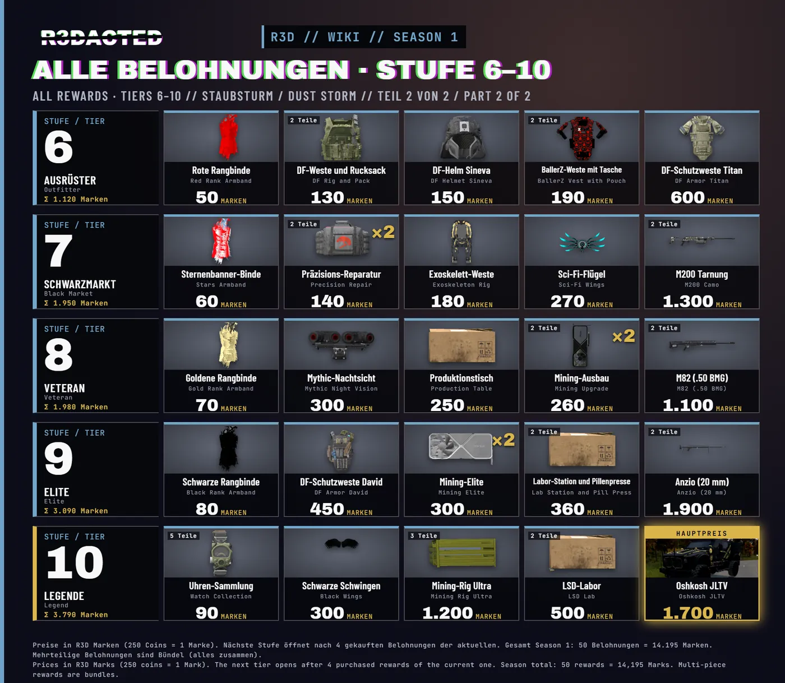

🎟️ Seasonpass & Kontor – so funktioniert’show it works
🎟️ Seasonpass & Kontor – vom Geld zur Belohnung.
🎟️ Season Pass & Kontor – from money to rewards.

Mit dem Seasonpass wird dein verdientes Geld zu Belohnungen: Rangabzeichen, Ausrüstung, Rucksäcke und am Ende der Oshkosh JLTV. Alles ist erspielbar – es gibt keinen Echtgeld-Pass.
So läuft es ab
1. Verdienen: R3D Coins durch Handel, Quests, Jagd und Bosse.
2. Bank: Zahle die Coins am Geldautomaten auf dein Bankkonto ein (LBmaster-Bank).
3. Tauschen: Im Hauptmenü im Reiter „SEASON 1 – STAUBSTURM“ tauschst du Coins gegen R3D Marken: 250 Coins = 1 Marke. Das geht nur, solange du offline bist.
4. Freischalten: Kaufe Belohnungen mit Marken. 10 Stufen à 5 Belohnungen; wenn du 4 von 5 einer Stufe gekauft hast, öffnet die nächste. Der Hauptpreis auf Stufe 10 ist der Oshkosh JLTV (1.700 Marken).
5. Abholen: Gekauftes holst du am Kontor im Badlands-Händlerhof ab (ca. 7650 / 10620). Fahrzeuge erscheinen am Stellplatz direkt daneben.
Limits
- 500.000 Coins pro 24 Stunden (rollierend), mindestens 250 Coins pro Tausch
- Kein Rückweg: Marken lassen sich nicht in Coins zurücktauschen
- Zeitraum: 01.11. – 30.11.2026, Ende automatisch am 01.12. um 00:00 Uhr
- Der Tausch ist 5 Minuten vor und nach jedem Server-Neustart gesperrt (00, 04, 08, 12, 16, 20 Uhr)
Rechenbeispiel
2.500 Coins → 10 Marken. Der kürzeste Weg bis zum JLTV kostet 6.040 Marken = 1.510.000 Coins, alle 50 Belohnungen zusammen 14.195 Marken = 3.548.750 Coins.
Tipps
- Coins vorher einzahlen und vor dem Tausch ausloggen
- Beim Abholen Platz im Inventar lassen
- Marken können im Spielermarkt zwischen Spielern gehandelt werden (5 % Gebühr)
The Season Pass turns the money you earn into rewards: rank badges, gear, backpacks and finally the Oshkosh JLTV. Everything is earnable – there is no real-money pass.
How it works
1. Earn: R3D Coins from trading, quests, hunting and bosses.
2. Bank: Pay the coins into your bank account at an ATM (LBmaster bank).
3. Exchange: In the main menu, tab “SEASON 1 – STAUBSTURM”, you exchange coins for R3D Marks: 250 coins = 1 Mark. This only works while you are offline.
4. Unlock: Buy rewards with Marks. 10 tiers with 5 rewards each; once you have bought 4 of 5 in a tier, the next one opens. The main prize on tier 10 is the Oshkosh JLTV (1,700 Marks).
5. Pick up: Collect your purchases at the Kontor in the Badlands trading yard (approx. 7650 / 10620). Vehicles appear at the parking spot right next to it.
Limits
- 500,000 coins per 24 hours (rolling), at least 250 coins per exchange
- No way back: Marks cannot be exchanged back into coins
- Duration: 01 Nov – 30 Nov 2026, ends automatically on 01 Dec at 00:00
- Exchange is locked 5 minutes before and after every server restart (00, 04, 08, 12, 16, 20 h)
Example
2,500 coins → 10 Marks. The shortest path to the JLTV costs 6,040 Marks = 1,510,000 coins, all 50 rewards together 14,195 Marks = 3,548,750 coins.
Tips
- Pay in first and log out before exchanging
- Keep space in your inventory when picking up
- Marks can be traded between players on the player market (5 % fee)
🎁 Alle Belohnungen – Stufe 1–5
🎁 All rewards – tiers 1–5

🎁 Alle Belohnungen – Stufe 6–10
🎁 All rewards – tiers 6–10

Preise in R3D Marken. Mehrteilige Belohnungen sind Bündel (alles zusammen), „×2“ = Menge. Die nächste Stufe öffnet nach 4 gekauften Belohnungen der aktuellen.
Stufe 1 · Ankunft (175 Marken)
Rekrutenbinde 20 · Feldkappen 15 · Taschen-Set 25 · Reparaturpaket ×3 30 · Wüstenfeld-Uniform 85
Stufe 2 · Feldlager (330 Marken)
Grüne Rangbinde 30 · Abstract-Kleidung 60 · Abstract-Mütze 70 · Werkzeugsatz 40 · Abstract-Rucksäcke 130
Stufe 3 · Wüstenhandel (400 Marken)
Orange Rangbinde 35 · Überlebensrucksack 45 · Abstract-Helm 70 · Injektor-Set ×2 50 · Hanf-Weste 200
Stufe 4 · Werkstatt (560 Marken)
Rosa Rangbinde 40 · Profi-Werkzeug 70 · Nachlade-Set 60 · Taktische Brille 90 · Panzer-Anzug 300
Stufe 5 · Sammler (800 Marken)
Violette Rangbinde 45 · Fell-Koffer 70 · BallerZ-Gläser NV 150 · Militärkiste 85 · Mining-Starter 450
Stufe 6 · Ausrüster (1.120 Marken)
Rote Rangbinde 50 · DF-Weste und Rucksack 130 · DF-Helm Sineva 150 · BallerZ-Weste mit Tasche 190 · DF-Schutzweste Titan 600
Stufe 7 · Schwarzmarkt (1.950 Marken)
Sternenbanner-Binde 60 · Präzisions-Reparatur ×2 140 · Exoskelett-Weste 180 · Sci-Fi-Flügel 270 · M200 Tarnung 1.300
Stufe 8 · Veteran (1.980 Marken)
Goldene Rangbinde 70 · Mythic-Nachtsicht 300 · Produktionstisch 250 · Mining-Ausbau ×2 260 · M82 (.50 BMG) 1.100
Stufe 9 · Elite (3.090 Marken)
Schwarze Rangbinde 80 · DF-Schutzweste David 450 · Mining-Elite ×2 300 · Labor-Station und Pillenpresse 360 · Anzio (20 mm) 1.900
Stufe 10 · Legende (3.790 Marken)
Uhren-Sammlung 90 · Schwarze Schwingen 300 · Mining-Rig Ultra 1.200 · LSD-Labor 500 · Oshkosh JLTV 1.700
Alle 50 Belohnungen zusammen: 14.195 Marken · Hauptpreis Stufe 10: Oshkosh JLTV (1.700 Marken)
Prices in R3D Marks. Multi-piece rewards are bundles (everything together), “×2” = quantity. The next tier opens after 4 purchased rewards of the current one.
Tier 1 · Arrival (175 Marks)
Recruit Armband 20 · Field Caps 15 · Pouch Set 25 · Repair Pack ×3 30 · Desert Field Uniform 85
Tier 2 · Camp (330 Marks)
Green Rank Armband 30 · Abstract Outfit 60 · Abstract Beanie 70 · Tool Set 40 · Abstract Backpacks 130
Tier 3 · Desert Trade (400 Marks)
Orange Rank Armband 35 · Survivor Pack 45 · Abstract Helmet 70 · Injector Set ×2 50 · Hemp Vest 200
Tier 4 · Workshop (560 Marks)
Pink Rank Armband 40 · Pro Tools 70 · Reload Set 60 · Tactical Glasses 90 · Armored Suit 300
Tier 5 · Collector (800 Marks)
Purple Rank Armband 45 · Pelt Case 70 · BallerZ Night Glasses 150 · Military Crate 85 · Mining Starter 450
Tier 6 · Outfitter (1,120 Marks)
Red Rank Armband 50 · DF Rig and Pack 130 · DF Helmet Sineva 150 · BallerZ Vest with Pouch 190 · DF Armor Titan 600
Tier 7 · Black Market (1,950 Marks)
Stars Armband 60 · Precision Repair ×2 140 · Exoskeleton Rig 180 · Sci-Fi Wings 270 · M200 Camo 1,300
Tier 8 · Veteran (1,980 Marks)
Gold Rank Armband 70 · Mythic Night Vision 300 · Production Table 250 · Mining Upgrade ×2 260 · M82 (.50 BMG) 1,100
Tier 9 · Elite (3,090 Marks)
Black Rank Armband 80 · DF Armor David 450 · Mining Elite ×2 300 · Lab Station and Pill Press 360 · Anzio (20 mm) 1,900
Tier 10 · Legend (3,790 Marks)
Watch Collection 90 · Black Wings 300 · Mining Rig Ultra 1,200 · LSD Lab 500 · Oshkosh JLTV 1,700
All 50 rewards together: 14,195 Marks · Main prize tier 10: Oshkosh JLTV (1,700 Marks)